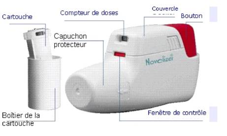

RÉSUMÉ DES CARACTÉRISTIQUES DU PRODUIT
ANSM - Mis à jour le : 31/01/2012
NOVOPULMON NOVOLIZER 400 microgrammes/dose, poudre pour inhalation
2. COMPOSITION QUALITATIVE ET QUANTITATIVE
Budésonide .................................................................................................................... 400 microgrammes
Pour une dose mesurée.
La quantité de principe actif dans la dose délivrée (à la sortie de l'embout buccal) est la même que la dose mesurée (à la sortie du compartiment doseur).
Excipient: lactose monohydraté.
Pour la liste complète des excipients, voir rubrique 6.1.
Poudre pour inhalation.
Poudre blanche.
4.1. Indications thérapeutiques
Traitement de l'asthme persistant.
Remarque: le budésonide n'est pas destiné au traitement des symptômes aigus de l'asthme.
4.2. Posologie et mode d'administration
Voie inhalée.
L'initiation d'un traitement par NOVOPULMON NOVOLIZER 400 microgrammes/dose, poudre pour inhalation en relais d'un autre médicament à base de corticoïde administré par voie inhalée, nécessite le réajustement de la dose en prenant en considération la nature du corticoïde, le schéma posologique et du dispositif d'administration.
Patients n'ayant jamais reçu de corticoïdes et patients préalablement stabilisés par une corticothérapie inhalée:
Adultes (y compris personnes âgées) et enfants/adolescents de plus de 12 ans:
Posologie initiale recommandée: 200 - 400 µg une ou deux fois par jour.
Posologie maximale recommandée: 800 µg deux fois par jour.
Enfants de 6 à 12 ans:
Posologie initiale recommandée: 200 µg deux fois par jour ou 200 - 400 microgrammes une fois par jour.
Posologie maximale recommandée: 400 µg deux fois par jour.
Enfants de moins de 6 ans:
NOVOPULMON NOVOLIZER 400 microgrammes/dose n'est pas recommandé chez les enfants de moins de 6 ans car les données actuellement disponibles n'ont pas permis d'établir son efficacité et sa tolérance.
Remarque: pour l'administration d'une dose de 200 µg, une présentation en dose unitaire de 200 microgrammes est disponible.
La posologie sera adaptée en fonction des besoins du patient, la sévérité de sa maladie et la réponse clinique du patient. La posologie sera ajustée afin d'obtenir un contrôle satisfaisant des symptômes. Il conviendra ensuite de rechercher la dose minimale efficace assurant une stabilisation des symptômes.
Posologies recommandées:
Adultes (y compris personnes âgées) et enfants/adolescents de plus de 12 ans: entre 200 et 1600 µg par jour.
Enfants de 6 à 12 ans: entre 200 et 800 µg par jour.
Chez les enfants et les adultes, y compris les personnes âgées, la dose quotidienne doit être administrée en deux prises par jour en début de traitement, durant les épisodes d'asthme sévère et au cours de la réduction ou de l'arrêt d'une corticothérapie orale.
Le schéma posologique en une prise par jour pour des doses quotidiennes allant jusqu'à 800 µg peut être envisagé chez les adultes, personnes âgées comprises, ainsi que chez les enfants et les adolescents âgés de plus de 12 ans, et présentant un asthme léger à modéré préalablement stabilisé par une corticothérapie inhalée (budésonide ou dipropionate de béclométasone) administrée en deux prises par jour.
Le schéma posologique en une prise par jour pour des doses quotidiennes allant jusqu'à 400 µg peut être envisagé chez les enfants âgés de 6 à 12 ans présentant un asthme léger à modéré préalablement contrôlé par une corticothérapie inhalée (budésonide ou dipropionate de béclométasone) administrée en deux prises par jour.
Lors du passage d'un traitement en deux prises par jour à un traitement en une seule prise par jour, la dose journalière totale doit être maintenue (en prenant en considération le médicament et la méthode d'administration). Il conviendra ensuite de réduire cette dose jusqu'à la dose minimale efficace assurant un contrôle satisfaisant des symptômes de l'asthme. Un traitement en une seule prise par jour ne peut être envisagé que si les symptômes d'asthme sont contrôlés.
En cas d'utilisation en une seule prise par jour, la dose sera administrée le soir de préférence.
En cas d'aggravation de l'asthme (telle que persistance des symptômes respiratoires ou augmentation de la consommation de bronchodilatateurs inhalés), la dose de corticoïde inhalé devra être augmentée. Chez les patients traités en une prise par jour, la dose quotidienne de corticoïde inhalé devra être doublée en passant à deux prises par jour. Toute aggravation de l'asthme doit conduire le patient à consulter un médecin dans les meilleurs délais.
Le patient devra toujours tenir à sa disposition un médicament bronchodilatateur agoniste des récepteurs béta-2 (béta-2 mimétique) inhalé à action rapide pour le soulagement des symptômes aigus d'asthme.
Modalités et durée du traitement:
NOVOPULMON NOVOLIZER 400 microgrammes/dose est destiné au traitement au long cours. Il sera administré régulièrement, selon le schéma posologique recommandé, même si les symptômes s'améliorent ou disparaissent sous traitement.
Le traitement devra être administré régulièrement, conformément au schéma recommandé, même en l'absence de symptômes.
Une amélioration de l'asthme peut apparaître en l'espace de 24 heures, mais une à deux semaines supplémentaires de traitement peuvent être nécessaires pour obtenir le plein effet.
Afin d'assurer une diffusion intrabronchique optimale du principe actif, l'inhalation devra être réalisée avec un débit régulier en inspirant aussi profondément et rapidement que possible (jusqu'à l'amplitude d'inspiration maximale). Le dispositif d'inhalation est muni d'un système signalant si l'inhalation a été effectuée correctement par un déclic audible et un changement de couleur de la fenêtre de contrôle, qui passe du vert au rouge. Si aucun déclic n'est émis et que la fenêtre ne change pas de couleur, le patient devra répéter l'inhalation. L'inhalateur reste bloqué jusqu'à ce que l'inhalation soit effectuée correctement.
Pour diminuer le risque de candidose buccale et de raucité de la voix, il est recommandé d'administrer le médicament avant les repas et de se rincer la bouche à l'eau ou de se brosser les dents après chaque inhalation.
Utilisation et manipulation de l'inhalateur (dispositif Novolizer):

Rechargement:
1. Appuyer légèrement sur les surfaces nervurées situées des deux côtés du couvercle, pousser celui-ci vers l'avant et le retirer.
2. Retirer le film protecteur en aluminium du boîtier de la cartouche et prélever une cartouche neuve.
3. Insérer la cartouche dans l'inhalateur de poudre (= Novolizer) en orientant le compteur de doses face à l'embout buccal.
4. Replacer le couvercle dans ses guides latéraux et le pousser horizontalement vers le bouton jusqu'à ce qu'il s'insère dans son logement. La cartouche peut être laissée dans l'inhalateur (Novolizer) jusqu'à ce qu'elle soit vide ou pendant trois mois au maximum après l'insertion.
Remarque: Les cartouches de NOVOPULMON NOVOLIZER 400 microgrammes/dose ne peuvent être utilisées qu'avec l'inhalateur de poudre Novolizer.
Mode d'emploi:
1. Lors de l'utilisation du dispositif Novolizer, toujours tenir ce dernier horizontalement. D'abord, retirer le capuchon protecteur.
2. Appuyer à fond sur le bouton rouge. On perçoit alors un double déclic sonore et la couleur de la fenêtre de contrôle (en bas) passe du rouge au vert. Ensuite, relâcher le bouton rouge. La couleur verte de la fenêtre indique que le Novolizer est prêt à l'emploi.
3. Expirer profondément (mais pas dans l'inhalateur de poudre).
4. Fermer les lèvres autour de l'embout buccal. Inhaler la poudre par une inspiration rapide et profonde. Pendant cette inhalation, on doit entendre un déclic sonore prouvant que l'inhalation a été correctement effectuée. Retenir sa respiration pendant quelques secondes, puis respirer normalement.
Remarque: si le patient a besoin de plus de plusieurs inhalations, il devra répéter les étapes 2-4.
5. Replacer le capuchon protecteur sur l'embout buccal - l'inhalation est maintenant terminée.
6. Le chiffre qui apparaît dans la fenêtre supérieure indique le nombre de doses restantes.
Remarque: il ne faut appuyer sur le bouton rouge qu'immédiatement avant l'inhalation.
Avec l'inhalateur Novolizer, l'inhalation involontaire d'une double dose est impossible. Le déclic sonore et le changement de couleur de la fenêtre de contrôle indiquent que l'inhalation a été effectuée correctement. Si la couleur de la fenêtre de contrôle demeure inchangée, il faut recommencer l'inhalation. Si l'inhalation n'est pas effectuée correctement après plusieurs tentatives, le patient doit consulter son médecin.
Nettoyage:
L'inhalateur (Novolizer) doit être nettoyé à intervalles réguliers et au minimum lors de chaque changement de cartouche. Pour connaître les instructions pour le nettoyage de l'appareil, se référer à la notice d'utilisation contenue dans la boîte.
Remarque: afin d'assurer une utilisation correcte de l'inhalateur, il convient d'expliquer soigneusement aux patients le mode d'emploi de l'appareil. Lors de l'utilisation de ce médicament chez l'enfant, il conviendra de s'assurer qu'un adulte surveille l'administration du médicament.
Hypersensibilité à la substance active budésonide ou à l'excipient lactose monohydraté (qui contient de faibles quantités de protéines de lait).
4.4. Mises en garde spéciales et précautions d'emploi
Le budésonide n'est pas indiqué pour le traitement des épisodes de dyspnée aiguë ou de l'état de mal asthmatique. Ces épisodes aigus doivent être traités selon les recommandations standards.
Le traitement des exacerbations et des symptômes de l'asthme peut nécessiter une augmentation de la dose de budésonide. Mais pour soulager les symptômes aigus d'asthme, il sera recommandé au patient d'avoir recours à un bronchodilatateur à effet rapide et de courte durée d'action.
Ce médicament devra être utilisé avec prudence et sous surveillance des patients en cas de tuberculose pulmonaire évolutive ou latente. Un traitement antituberculeux devra être envisagé chez ces patients s'ils reçoivent un traitement par budésonide. De même, chez les patients atteints d'infections respiratoires fongiques, virales ou autres, ce traitement sera administré avec précautions et sous surveillance étroite. Il conviendra de s'assurer que la prise en charge thérapeutique adaptée de ces infections est menée en parallèle.
Les patients qui, malgré plusieurs tentatives, ne parviennent pas à effectuer correctement les inhalations doivent consulter leur médecin.
En cas d'insuffisance hépatique sévère, comme pour les autres corticoïdes, l'élimination systémique du budésonide peut être diminuée, ce qui peut entraîner une augmentation de l'exposition systémique. Chez ces patients, il convient donc d'être particulièrement vigilant quant à la survenue d'effets systémiques et les fonctions de l'axe hypothalamo-hypophyso-corticosurrénalien devront être régulièrement contrôlées.
La corticothérapie inhalée au long cours à fortes doses, en particulier avec des doses supérieures aux doses recommandées, peut entraîner une réduction cliniquement significative des fonctions surrénales. Lors d'un épisode de stress ou en cas d'intervention chirurgicale, une corticothérapie de substitution par voie systémique devra être envisagée.
La corticothérapie inhalée peut entraîner des effets systémiques, en particulier lors de traitement prolongé à fortes doses. La survenue de ces effets reste cependant moins probable qu'au cours de la corticothérapie orale. Peuvent ainsi être observés: inhibition des fonctions surrénales, retard de croissance chez les enfants et les adolescents, diminution de la densité minérale osseuse, cataracte et glaucome, et plus rarement, des troubles psychologiques ou des troubles du comportement comprenant: hyperactivité psychomotrice, des troubles du sommeil, une anxiété, une dépression, ou une agressivité (en particulier chez les enfants). En conséquence, la posologie minimale efficace devra toujours être recherchée.
Il est recommandé de contrôler régulièrement la taille des enfants recevant un traitement prolongé par des corticoïdes inhalés. En cas de ralentissement de la croissance, la conduite thérapeutique devra être réévaluée et il conviendra de rechercher la posologie minimale efficace. L'avis d'un pédiatre spécialisé en pneumologie est préconisé.
Précautions d'emploi chez les patients ne recevant pas de corticothérapie préalable:
Chez les patients n'ayant préalablement jamais reçu de corticothérapie ou seulement quelques cures occasionnelles, l'effet du budésonide sur la fonction respiratoire, s'il est utilisé régulièrement selon les recommandations d'emploi, peut n'être ressenti par le patient qu'après environ 1 à 2 semaines. Toutefois, en cas de sécrétion muqueuse abondante et d'inflammation bronchique importante, l'obstruction peut être telle que le budésonide par voie inhalée ne peut exercer un effet optimal. Dans ces cas, une brève corticothérapie par voie systémique pourra être initiée en même temps que le traitement par voie inhalée par budésonide. La corticothérapie par voie inhalée sera poursuivie après la réduction progressive de la corticothérapie par voie systémique.
Précautions d'emploi lors du passage d'une corticothérapie par voie systémique à la corticothérapie inhalée:
Le remplacement de la corticothérapie par voie systémique, par NOVOPULMON NOVOLIZER 400 microgrammes/dose ne doit être envisagé que lorsque les symptômes d'asthme sont contrôlés. La corticothérapie par voie systémique ne devra pas être arrêtée brutalement chez ces patients qui présentent un risque d'inhibition des fonctions surrénales. Le traitement par NOVOPULMON NOVOLIZER 400 microgrammes/dose sera donc initié à fortes doses pendant environ 7 à 10 jours en adjonction à la corticothérapie systémique. Puis, la dose de corticoïde par voie systémique sera diminuée progressivement (par exemple par paliers de 1 milligramme de prednisolone ou l'équivalent une fois par semaine ou 2,5 milligrammes de prednisolone ou l'équivalent une fois par mois) en fonction de la réponse du patient et de la dose initiale du corticoïde par voie systémique. La corticothérapie par voie orale sera réduite au minimum et celle-ci pourra parfois être totalement remplacée par le budésonide inhalé.
Durant les premiers mois de remplacement de la corticothérapie par voie systémique par la corticothérapie inhalée, il peut être nécessaire de reprendre l'administration de corticoïde par voie systémique pendant les périodes de stress ou dans les situations d'urgence (exemple: infections sévères, traumatismes ou interventions chirurgicales). Ces précautions s'appliquent également aux patients ayant reçu de fortes doses de corticoïdes inhalés pendant des périodes prolongées. Dans ces cas, la fonction corticosurrénale peut également être inhibée et une supplémentation par une corticothérapie systémique peut être nécessaire pendant les périodes de stress.
La restauration des fonctions corticosurrénales peut être très longue. Il convient de contrôler régulièrement les fonctions de l'axe hypothalamo-hypophyso-corticosurrénalien.
Pendant la période de sevrage de la corticothérapie systémique, le patient peut éprouver une sensation non spécifique de malaise général, malgré la stabilisation ou même l'amélioration de la fonction respiratoire. Le patient devra être encouragé à poursuivre le traitement par le budésonide en inhalation et le sevrage de la corticothérapie orale, sauf si des signes cliniques évoquant une insuffisance surrénale apparaissent.
Après passage au traitement en inhalation, des symptômes ayant régressé au préalable avec la corticothérapie systémique, tels que rhinite allergique, eczéma ou myalgies et arthralgies peuvent réapparaître. Un traitement adapté de ces symptômes devra alors être envisagé.
Le traitement par le budésonide inhalé ne doit pas être interrompu brutalement.
Exacerbation des symptômes liés à une infection respiratoire aiguë:
Si les symptômes cliniques s'aggravent en raison de la survenue d'une infection respiratoire, un traitement antibiothérapie adapté devra être envisagé. La posologie du traitement par budésonide sera alors ajustée en fonction de l'état clinique du patient. Dans certains cas, le recours à une corticothérapie par voie systémique peut être nécessaire.
Si au bout de 14 jours, il n'est pas observé d'amélioration des symptômes et un contrôle suffisant de l'asthme, un avis médical est requis afin d'adapter la posologie et vérifier la technique d'inhalation du patient.
L'attention des sportifs sera attirée sur le fait que cette spécialité contient un principe actif pouvant induire une réaction positive des tests pratiqués lors des contrôles antidopage.
Précautions d'emploi lors du passage de NOVOPULMON NOVOLIZER 200 microgrammes/dose à NOVOPULMON NOVOLIZER 400 microgrammes/dose:
Les enfants et les patients n'ayant pas la faculté d'atteindre un débit inspiratoire de plus de 60 litre/minute doivent être surveillés lorsque pour une même dose prescrite il passe de NOVOPULMON NOVOLIZER 200 microgrammes/dose à NOVOPULMON NOVOLIZER 400 microgrammes/dose.
Le lactose peut contenir des protéines de lait. La quantité de lactose contenue dans NOVOPULMON NOVOLIZER 400 microgrammes/dose ne provoque normalement pas de problèmes chez les sujets intolérants au lactose. Toutefois, chez les patients présentant un déficit enzymatique important, une intolérance au lactose a été rapportée très rarement après inhalation de poudre contenant du lactose.
4.5. Interactions avec d'autres médicaments et autres formes d'interactions
En raison des très faibles concentrations plasmatiques atteintes après inhalation, le risque d'interaction médicamenteuse cliniquement significative reste d'une façon générale improbable.
Cependant, les inhibiteurs puissants du CYP3A4 (par exemple, ritonavir, itraconazole, kétoconazole, nelfinavir) peuvent augmenter de façon importante les taux plasmatiques de budésonide. En l'absence de données permettant d'établir des recommandations posologiques, il conviendra par précaution de respecter un intervalle de temps le plus long possible entre l'administration d'inhibiteurs de CYP3A4 et celle du budésonide et l'éventualité d'une réduction de la dose de budésonide devra être envisagée.
Les données sur environ 2 000 grossesses exposées indiquent que l'utilisation de budésonide par inhalation n'augmente pas le risque tératogène.
Dans les études chez l'animal, les glucocorticoïdes ont montré un effet inducteur de malformations (voir 5.3.). Cet effet n'est vraisemblablement pas transposable chez l'homme aux doses recommandées en thérapeutique.
D'autres effets indésirables (tels que retard de croissance intra-utérin, maladie cardiovasculaire à l'âge adulte) ont été observés chez l'animal avec des expositions inférieures à celle correspondant aux doses tératogènes.
NOVOPULMON NOVOLIZER 400 microgrammes/dose ne doit être utilisé que si les bénéfices escomptés l'emportent sur les risques potentiels. Il convient de toujours administrer la dose minimale efficace.
Le budésonide est excrété dans le lait maternel mais après inhalation, il n'est pas attendu de retentissement sur l'enfant. NOVOPULMON NOVOLIZER 400 microgrammes/dose peut être utilisé pendant l'allaitement.
4.7. Effets sur l'aptitude à conduire des véhicules et à utiliser des machines
Il n'a pas été conduit d'étude spécifique évaluant les effets du budésonide sur l'aptitude à conduire des véhicules ou à utiliser des machines.
Le tableau ci-après présente les effets indésirables possibles du médicament, classés par classe organe et par fréquence.
Les fréquences de survenue adoptées sont définies de la façon suivante: Très fréquent (≥ 1/10); fréquent (≥ 1/100, < 1/10); peu fréquent (≥ 1/1 000, < 1/100); rare (≥ 1/10 000, < 1/1 000); très rare (< 1/10 000); fréquence indéterminée (la fréquence de survenue ne peut être estimée sur la base des données disponibles).
|
Systèmes |
Très fréquent |
Fréquent |
Peu fréquent |
Rare (>1/10000, <1/1000) |
Très rare, y compris cas isolés <1/10000 |
Fréquence indéterminée |
|
|
Infections |
|
Candidose bucco-pharyngée |
|
|
|
|
|
|
Troubles immunitaires |
|
|
|
Réaction d'hypersensibilité, œdème de Quincke |
|
|
|
|
Troubles endocriniens |
|
|
|
|
Inhibition de la fonction cortico-surrénale |
|
|
|
Troubles neuro-psychiatriques |
|
|
|
|
|
Hyperactivité psychomotrice, troubles du sommeil, anxiété, dépression, agitation, nervosité, agressivité, troubles du comportement (en particulier chez l'enfant) |
|
|
Troubles oculaires |
|
|
|
|
Cataracte, glaucome |
|
|
|
Troubles respiratoires, thoraciques et mediastinaux |
|
Raucité de la voix, toux |
|
Bronchospasme |
|
|
|
|
Troubles gastro-intestinaux |
|
Irritation de la muqueuse buccale, dysphagie |
|
|
|
|
|
|
Anomalies de la peau et du tissu sous-cutané |
|
|
|
Réactions cutanées, urticaire, rash, eczéma, prurit, érythème, ecchymoses |
|
|
|
|
Troubles musculo-squelettiques, anomalies du tissu conjonctif et des os |
|
|
|
Retard de croissance |
Diminution de la densité osseuse |
|
|
De légères irritations des muqueuses s'accompagnant de difficultés de déglutition, de raucité de la voix et de toux sont souvent observées.
Le traitement par le budésonide inhalé peut entraîner la survenue des candidoses de l'oropharynx. Le risque d'apparition de candidoses est moins important si l'inhalation est effectuée avant les repas et/ou si le patient se rince la bouche après l'inhalation. Dans la majorité des cas, ces candidoses régressent sous traitement antifongique local et n'entraîne pas l'arrêt du traitement par le budésonide inhalé.
Comme avec d'autres traitements administrés par voie inhalée, l'inhalation du produit peut entraîner un bronchospasme se manifestant par l'apparition de sifflements bronchiques immédiatement après l'administration du produit. Il conviendra d'avoir immédiatement recours à un bronchodilatateur inhalé à effet rapide et de courte durée d'action afin de lever la bronchoconstriction. L'administration de ce médicament ne devra pas être renouvelée, et après examen du patient, si besoin, un traitement différent sera instauré.
La corticothérapie inhalée peut entraîner des effets systémiques, en particulier lors de traitements prolongés à fortes doses. Peuvent être observés: inhibition des fonctions surrénales, retard de croissance chez les enfants et adolescents, diminution de la densité minérale osseuse, cataracte et glaucome. Il conviendra de surveiller régulièrement la croissance des enfants recevant un traitement prolongé par des corticoïdes inhalés.
Le risque d'infections peut être augmenté. Les réactions physiologiques d'adaptation au stress peuvent être diminuées.
Le lactose-monohydraté contient de faibles quantités de protéines de lait qui peuvent induire la survenue de réactions allergiques.
Symptômes de surdosage:
Le risque de surdosage aigu est quasiment inexistant avec le NOVOPULMON NOVOLIZER 400 microgrammes/dose du fait de la voie d'administration. Lors d'une exposition au long cours, une atrophie du cortex des glandes surrénales est possible. Les effets classiques des corticoïdes, tels que l'augmentation du risque lié aux infections, peuvent être observés. La capacité d'adaptation au stress peut être perturbée.
Conduite à tenir en cas de surdosage:
En règle générale, il n'y a pas lieu d'instaurer un traitement d'urgence particulier en cas de surdosage aigu. Lorsque le traitement par inhalation est poursuivi à la posologie prescrite, la fonction de l'axe hypothalamo-hypophyso-corticosurrénalien se normalise en général en 1 à 2 jours.
Dans les situations de stress, il peut être utile par mesure de précaution d'ajouter des corticoïdes (exemple: fortes doses d'hydrocortisone).
Les patients présentant une atrophie corticosurrénale doivent être considérés comme cortico-dépendants et devront recevoir une corticothérapie d'entretien par voie systémique à doses appropriées jusqu'à stabilisation de leur état clinique.
5. PROPRIETES PHARMACOLOGIQUES
5.1. Propriétés pharmacodynamiques
Classe pharmacothérapeutique: Glucocorticoïde topique, Code ATC: R03BA02.
Le budésonide est un glucocorticoïde de synthèse. Après inhalation, il exerce un effet anti-inflammatoire local sur la muqueuse bronchique.
Le budésonide traverse les membranes cellulaires et se lie à un récepteur protéique cytoplasmique. Ce complexe pénètre ensuite dans le noyau et y induit la biosynthèse de protéines spécifiques telles que la macrocortine (lipocortine). Les effets de type hormonal apparaissent après une certaine période de latence (30-60 min) et aboutissent à une inhibition de la phospholipase A2. Il est également possible que les doses thérapeutiques efficaces de budésonide (comme d'autres glucocorticoïdes anti-inflammatoires) inhibent l'expression de la COX-2 induite par les cytokines.
Sur le plan clinique, l'effet anti-inflammatoire aboutit par exemple à une amélioration des symptômes tels que la dyspnée. L'hyperréactivité bronchique aux stimuli exogènes est diminuée.
5.2. Propriétés pharmacocinétiques
Le pic de concentration plasmatique est atteint environ 30 minutes après l'inhalation.
Après inhalation, la biodisponibilité systémique est de 37 % et la concentration dans le plasma humain est de 0,63 nmol/l après l'inhalation d'une dose unique de 1600 microgrammes. Le taux de liaison aux protéines plasmatiques est de 85-90 % et le volume de distribution d'environ 3 l/kg. La demi-vie d'élimination plasmatique est d'environ 2,8 heures chez l'adulte, et nettement plus courte chez l'enfant (1,5 heures).
Le seuil de déclenchement de l'inhalateur (Novolizer) qu'il faut dépasser pour une inhalation correcte se situe à des débits inspiratoires d'au moins 35-50 l/min. La linéarité des concentrations plasmatiques en fonction de la dose, indiquant la possibilité de transfert du Budésonide Novolizer 200 µg au Budésonide Novolizer 400 µg, a été démontrée avec des débits inspiratoires supérieurs ou égaux à 60 l/min.
La fraction respirable (fraction de particules fines: diamètre < 5 µm) mesurée in vitro est d'environ 30-50 % de la dose nominale. Chez les sujets sains, environ 20-30 % de la dose de budésonide unitaire pénètrent dans les poumons. Le reste se dépose dans la bouche, le nez et la gorge et est en grande partie dégluti. La fraction déglutie est soumise à un important effet de premier passage hépatique. Le budésonide est essentiellement métabolisé dans le foie par oxydation, celle-ci étant principalement catalysée par l'enzyme CYP3A4.
Les principaux métabolites sont le 6b-hydroxybudésonide et la 16a-hydroxyprednisolone, dont l'activité pharmacologique est nettement moindre que celle de la molécule mère, ce qui limite la biodisponibilité systémique et la toxicité.
5.3. Données de sécurité préclinique
Les études précliniques de toxicité chronique, de génotoxicité et de carcinogénicité n'ont révélé aucun risque particulier pour l'homme aux doses thérapeutiques.
Les glucocorticoïdes, y compris le budésonide, induisent des effets tératogènes chez l'animal, notamment des fentes palatines et des anomalies squelettiques. Ces observations ne sont néanmoins pas considérées comme prédictives d'un risque chez l'homme aux doses thérapeutiques.
Sans objet.
3 ans.
6 mois après première ouverture.
Dispositif Novolizer:
3 ans avant la première utilisation.
1 an en cours d'utilisation.
Remarque: Le fonctionnement du Novolizer a été validé par des tests portant sur 2000 doses unitaires. En conséquence, on peut utiliser au maximum 40 cartouches de 50 doses unitaires ou 20 cartouches de 100 doses unitaires avec ce dispositif (en l'espace d'un an), avant de le remplacer.
6.4. Précautions particulières de conservation
A conserver dans l'emballage extérieur.
Pendant l'utilisation, conserver à l'abri de l'humidité.
6.5. Nature et contenu de l'emballage extérieur
Conditionnements de départ
1 cartouche (polystyrène/polypropylène) contenant 50 doses unitaires, conditionnée dans un tube en polypropylène scellé par un film d'aluminium, et 1 inhalateur de poudre (embout buccal en polycarbonate et dispositif en copolymère d'acrylnitrilbutadiènestyrol, polyoxyméthylène).
1 cartouche (polystyrène/polypropylène) contenant 100 doses unitaires, conditionnée dans un tube en polypropylène scellé par un film d'aluminium, et 1 inhalateur de poudre (embout buccal en polycarbonate et dispositif en copolymère d'acrylnitrilbutadiènestyrol, polyoxyméthylène).
2 cartouches (polystyrène/polypropylène) contenant chacune 100 doses unitaires, conditionnées dans un tube en polypropylène scellé par un film d'aluminium, et 1 inhalateur de poudre (embout buccal en polycarbonate et dispositif en copolymère d'acrylnitrilbutadiènestyrol, polyoxyméthylène).
Conditionnements de recharge
1 cartouche (polystyrène/polypropylène) contenant 50 doses unitaires, conditionnée dans un tube en polypropylène scellé par un film d'aluminium.
1 cartouche (polystyrène/polypropylène) contenant 100 doses unitaires, conditionnée dans un tube en polypropylène scellé par un film d'aluminium.
2 cartouches (polystyrène/polypropylène) contenant chacune 100 doses unitaires, conditionnées dans un tube en polypropylène scellé par un film d'aluminium.
Conditionnement hospitalier
1 cartouche (polystyrène/polypropylène) contenant 50 doses unitaires, conditionnée dans un tube en polypropylène scellé par un film d'aluminium, et 1 inhalateur de poudre (embout buccal en polycarbonate et dispositif en copolymère d'acrylnitrilbutadiènestyrol, polyoxyméthylène).
Boîte de 10.
1 cartouche (polystyrène/polypropylène) contenant 100 doses unitaires, conditionnée dans un tube en polypropylène scellé par un film d'aluminium, et 1 inhalateur de poudre (embout buccal en polycarbonate et dispositif en copolymère d'acrylnitrilbutadiènestyrol, polyoxyméthylène).
Boîte de 10.
Toutes les présentations peuvent ne pas être commercialisées.
6.6. Précautions particulières d’élimination et de manipulation
Pas d'exigences particulières.
7. TITULAIRE DE L’AUTORISATION DE MISE SUR LE MARCHE
MEDA PHARMA
25, BOULEVARD DE L'AMIRAL BRUIX
75016 PARIS
8. NUMERO(S) D’AUTORISATION DE MISE SUR LE MARCHE
· 369 845-5: 50 doses en cartouche (Polystyrène/Polypropylène) boîte de 1 avec inhalateur.
· 369 846-1: 100 doses en cartouche (Polystyrène/Polypropylène) boîte de 1 avec inhalateur.
· 369 847-8: 100 doses en cartouche (Polystyrène/Polypropylène) boîte de 2 avec inhalateur.
· 369 848-4: 50 doses en cartouche (Polystyrène/Polypropylène). Boîte de 1.
· 369 849-0: 100 doses en cartouche (Polystyrène/Polypropylène). Boîte de 1.
· 369 850-9: 100 doses en cartouche (Polystyrène/Polypropylène). Boîte de 2.
· 567 424-6: 50 doses en cartouche (Polystyrène/Polypropylène) boîte de 10 avec inhalateur.
· 567 425-2: 100 doses en cartouche (Polystyrène/Polypropylène) boîte de 10 avec inhalateur.
9. DATE DE PREMIERE AUTORISATION/DE RENOUVELLEMENT DE L’AUTORISATION
[à compléter par le titulaire]
10. DATE DE MISE A JOUR DU TEXTE
[à compléter par le titulaire]
Sans objet.
12. INSTRUCTIONS POUR LA PREPARATION DES RADIOPHARMACEUTIQUES
Sans objet.
Liste I.